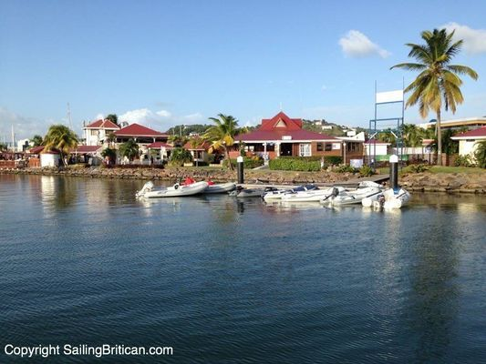

Taşınma Kontrol Listesi & Zaman Çizelgesi
▼Saint Lucia'ya taşınmak dikkatli planlama gerektirir. Aşağıda ilk karardan yerleşmeye kadar temel adımları kapsayan aşamalı bir zaman çizelgesi bulunmaktadır. Hedef taşınma tarihinizden en az 3–6 ay önce başlayın.
Aşama 1: Planlama (3–6 Ay Önce)
| Görev | Ayrıntılar | Süre |
|---|---|---|
| Vize/izin türünü belirleyin | Live It vizesi (dijital göçebe), çalışma izni veya ziyaretçi olarak kalış. Aşağıdaki Vize & İzinler bölümüne bakın. | 6 ay önce |
| Konut araştırması | Rodney Bay (expat merkezi), Castries, Marigot Bay veya Soufriere. Konut Rehberi'ne bakın. | 4–6 ay |
| Sağlık sigortası edinin | Tıbbi tahliye dahil uluslararası expat kapsamı. Sagicor, Pacific Prime, MSH International, Cigna Global. | 3–4 ay |
| Evcil hayvan ithalat sürecini başlatın | Veteriner ithalat izni, kuduz aşısı, sağlık sertifikası. Nakliye & Gümrük bölümüne bakın. | 3–4 ay |
| Uluslararası belgeler | Apostilli doğum belgeleri, evlilik cüzdanları, sabıka kaydı, okul transkriptleri. | 3–4 ay |
| Okul araştırması | Çocuklar için ISSL veya diğer okullara başvurun. Bekleme listeleri olabilir. Eğitim bölümüne bakın. | 4–6 ay |
Aşama 2: Hazırlık (1–3 Ay Önce)
| Görev | Ayrıntılar | Süre |
|---|---|---|
| Nakliye ayarlayın | Konteyner (20ft veya 40ft) için teklif alın. Elektronikler için seri numaralı İngilizce detaylı envanter hazırlayın. | 2–3 ay |
| Konut güvenceye alın | Kira sözleşmesi imzalayın veya geçici konaklama ayırtın. 1–2 ay depozito + ilk ay beklenir. | 2–3 ay |
| Vize/izin başvurusu | Live It vizesi: seyahatten en az 2 hafta önce e-posta ile başvuru. Çalışma izni: 4–6 hafta işlem. | 1–2 ay |
| Araç ayarlayın | Karar verin: araç ithal etme (yüksek gümrük %35–125) veya yerelden satın alma. Araç İthalatı'na bakın. | 2–3 ay |
| Bankaları ve hizmetleri bilgilendirin | Kendi bankanızı taşınma hakkında bilgilendirin. Uluslararası transfer düzenleyin. | 1 ay |
| Bankacılık belgeleri toplayın | Banka referans mektupları, gelir kanıtı, apostilli kimlik belgeleri. Bankacılık bölümüne bakın. | 1–2 ay |
Aşama 3: Varış (İlk 30 Gün)
| Görev | Ayrıntılar | Öncelik |
|---|---|---|
| Geçici sürücü belgesi alın | Polis karakolunda veya araç kiralama şirketinde XCD $54 / USD $20. 3 ay geçerli. | 1. hafta |
| SIM kart alın | Havalimanında veya herhangi bir Flow/Digicel şubesinde. Pasaport gerekli. | 1. gün |
| İnternet kurulumu | Flow fiber, Digicel fiber veya Starlink. 1–2 hafta kurulum bekleme süresi. | 1. hafta |
| Banka hesabı açın | Pasaport, adres kanıtı, referans mektupları ile bankaya gidin. Bankacılık bölümüne bakın. | 1–2. hafta |
| Elçiliğe kayıt olun | Acil durum yardımı için ülkenizin büyükelçiliğine veya konsolosluğuna kayıt olun. | 1. hafta |
| Sevk edilen eşyaları gümrükten çekin | Gümrük müşaviri tutun. ABD/İngiltere'den 3–6 hafta transit süresi beklenir. | 2–6. hafta |
| NIC'ye kayıt olun | Yerel olarak istihdam ediliyorsanız Ulusal Sigorta Kurumu kaydı. | 2. hafta |
| Adayı keşfedin | Önemli yerleri ziyaret edin, komşularla tanışın, expat gruplarına katılın. | Sürekli |
Varışta Önemli İletişim Bilgileri
Göçmenlik Departmanı: +1 (758) 468-4601 | Gümrük: +1 (758) 468-4801 | Polis (acil olmayan): +1 (758) 456-3600 | Acil Durum: 911 veya 999 | Tapion Hastanesi: +1 (758) 459-2000 | OKEU Hastanesi: +1 (758) 457-6400
Vize & Oturma İzinleri
▼Saint Lucia, yabancılara adada yaşamak için kısa süreli ziyaretçi konaklamalarından kalıcı oturma iznine ve vatandaşlığa kadar çeşitli yollar sunmaktadır.
Vize & İzin Kategorileri
| İzin Türü | Süre | Ücret | Temel Gereksinimler |
|---|---|---|---|
| Vizesiz Giriş | 6 haftaya kadar | Ücretsiz | Geçerli pasaport (6+ ay). ABD, İngiltere, Kanada, AB, CARICOM ve 80+ ülke vatandaşları. Uzatma talep edilebilir. |
| Live It Vizesi (Dijital Göçebe) | 1 yıla kadar | ~USD $50 (tek giriş) / $75 (çoklu giriş) | Uzaktan çalışma veya yurt dışı eğitim kanıtı. Yeterli fon kanıtı (banka ekstresi). Asgari gelir şartı yok. Konaklama kanıtı. |
| Geçici Çalışma İzni | 1 yıla kadar (yenilenebilir) | XCD $500 (~USD $185) | İşveren sponsorluğu. İşverenin uygun yerel aday bulunmadığını kanıtlaması gerekir. 4–6 hafta işlem. |
| Kalıcı Çalışma İzni | Süresiz (yenilenebilir) | XCD $750 (~USD $278) | Geçici izne sahip olmuş olmalı. İşveren devam eden yabancı istihdamını geçerli kılmalı. |
| Uzman Çalışma İzni | 1–2 yıl (yenilenebilir) | Değişken | Sağlık, mühendislik, BT, finans uzmanları. Yerel olarak mevcut olmayan beceriler. |
| Oturma İzni | Yıllık yenileme | Değişken | 3 ayı aşan konaklamalar için. Göçmenlik Departmanına gerekçe ile başvuru. |
| Kalıcı Oturma | Kalıcı | Değişken | Geçerli izinlerle 5+ yıl yasal ikamet sonrası. Göçmenlik'e başvuru. |
| CBI Vatandaşlığı | Kalıcı (vatandaşlık) | USD $240,000'den başlayan | Ulusal Ekonomik Fon bağışı, gayrimenkul veya işletme yatırımı. Pasaportlu tam vatandaşlık. CBI Programı'na bakın. |
Live It Vizesi (Dijital Göçebe) — Başvuru Süreci
| Adım | Ayrıntılar |
|---|---|
| 1. Belgeleri toplayın | Pasaport (6+ ay geçerlilik, 2 boş sayfa), 2 vesikalık fotoğraf, uzaktan çalışma veya eğitim kanıtı, yeterli fonları gösteren banka ekstresi, konaklama kanıtı. |
| 2. Başvuruyu gönderin | Doldurulmuş formu ve belgeleri seyahatten en az 2 hafta önce Göçmenlik Departmanı'na e-posta ile gönderin. |
| 3. İşlem | Karar için yaklaşık 5 iş günü. E-posta ile bilgilendirileceksiniz. |
| 4. Vize ücretini ödeyin | Varışta havalimanında ödeyin: ~USD $50 (tek giriş) veya ~USD $75 (çoklu giriş, önerilir). |
| 5. E-göçmenlik formunu doldurun | travelslu.govt.lc adresinden elektronik göçmenlik formunu gönderin ve varışta QR kodu sunun. |
Dijital Göçebeler İçin Vergi Etkileri
Saint Lucia vergi mukimliği için 183 gün kuralı uygulamaktadır. Saint Lucia'da yılda 183+ gün geçirirseniz vergi mukimi olursunuz. "Olağan mukim" olan vergi mukimleri dünya çapında gelir üzerinden vergilendirilir. Ancak "olağan mukim olmayan" mukimler (ör. ilk yıl gelenler) yalnızca Saint Lucia kaynaklı gelir ve ülkeye havale edilen yabancı gelir üzerinden vergilendirilir. Gelir vergisi oranları: ilk EC$40,000 üzerinde %0, sonra yüksek dilimlerde %10–30. Sermaye kazancı vergisi ve veraset vergisi yoktur. Durumunuza özgü bilgi için yerel vergi danışmanına başvurun. Hukuk & Vergi sayfasına bakın.
Bankacılık & Finans
▼Saint Lucia'da yabancı olarak banka hesabı açmak mümkündür ancak yerel vatandaşlara göre daha fazla belge gerektirir. En iyi sonuçlar için şubeyi şahsen ziyaret etmeyi planlayın.
Hesap Açmak İçin Gerekli Belgeler
| Belge | Notlar |
|---|---|
| Geçerli pasaport | Artı ikinci bir devlet tarafından verilmiş fotoğraflı kimlik (yabancı uyrukluların çoğu bankada iki kimliğe ihtiyacı vardır). |
| Adres kanıtı | Fatura, kira sözleşmesi veya işveren mektubu. Bazı bankalar başlangıçta kendi ülkenizden kanıt kabul eder. |
| Gelir / istihdam kanıtı | İstihdam mektubu, maaş bordrosu veya uzaktan çalışma / serbest çalışma gelir kanıtı. |
| Banka referans mektubu | Mevcut bankanızdan (6 ay içinde). Bazı bankalar iki referans mektubu ister. |
| Profesyonel referans | Bir avukat, muhasebeci veya diğer nitelikli bir profesyonelden mektup (yabancı uyrukluları). |
| Vergi Kimlik Numarası | Kendi ülkenizin vergi kimlik numarası veya varsa Saint Lucia TIN. |
| İlk depozito | Bankaya göre değişir: kişisel hesaplar için genellikle XCD $500–$2,000. |
Expatlar İçin Büyük Bankalar
| Banka | SWIFT Kodu | Hesap Türleri | Notlar |
|---|---|---|---|
| Bank of Saint Lucia (BOSL) | LUOBLCLC | XCD, USD, EUR, GBP, CAD | En büyük yerel banka. Şahsen hesap açılışı. İnternet bankacılığı mevcut. |
| 1st National Bank | FNSLLCLC | XCD, USD | RBC operasyonlarını devraldı. KÖBİ dostu. Büyüyen şube ağı. |
| CIBC Caribbean | FCIBLELC | XCD, USD, CAD | Ocak 2024'te yeniden markalaştı. Kanada bağlantıları için iyi. Uluslararası havale. |
| Republic Bank | RABORBLC | XCD, USD | Trinidad merkezli. İnternet bankacılığı platformu. |
| Bank of Nova Scotia (Scotiabank) | NOSCLCLC | XCD, USD, CAD | Kanadalı expatlar genellikle tercih eder. Uluslararası ağ. |
| First Citizens Bank | FTCILCLC | XCD, USD | Trinidad merkezli. İş odaklı. Yakın zamanda piyasaya eklendi. |
| EC Global Insurance | — | Tasarruf, vadeli mevduat | Rekabetçi oranlarla kredi birliği alternatifi. |
Pratik Bankacılık İpuçları
- Gecikme beklentisi: Yabancılar için hesap açılışı artırılmış özen yükümlülüğü (KYC/AML düzenlemeleri) nedeniyle 1–4 hafta sürebilir.
- Orijinalleri getirin: Tüm belgelerin noter veya apostil onaylı kopyaları şiddetle tavsiye edilir.
- Uzaktan açılış: Bazı bankalar uzaktan başvuruya izin verir, ancak belgeler apostil ve noter onayı ile posta yoluyla gönderilmelidir (ECCB politikası).
- Para birimi: Doğu Karayip Doları (XCD) 1 USD = 2,70 XCD sabit kurla bağlıdır. USD hesabı da açabilirsiniz.
- Uluslararası transferler: Tüm bankalarda SWIFT transferleri mevcuttur. Bölgesel transferler için ECACH. Wise ve PayPal çalışır ancak sınırlamaları vardır.
- ATM'ler: Yalnızca XCD verir. ABD doları turistik bölgelerde yaygın olarak kabul edilir (bazen 2,50 kurunda).
- Kredi birlikleri: Adada 16+ kredi birliği tasarruf ve kredi ürünleri sunmaktadır. Temel hesaplar için bankalardan daha az bürokratik.
Expatlar İçin Sağlık Hizmetleri
▼Saint Lucia'da hem kamu hem de özel sağlık hizmetleri bulunmaktadır. Kamu tesisleri uygun fiyatlıdır ancak uzun bekleme süreleri ve sınırlı uzman mevcudiyeti olabilir. Çoğu expat uluslararası sağlık sigortası ile özel sağlık hizmetlerini kullanır.
Hastaneler & Temel Tesisler
| Tesis | Tür | Konum | Expatlar İçin Notlar |
|---|---|---|---|
| Owen King AB Hastanesi (OKEU) | Kamu | Castries | Ana kamu hastanesi, 120 yatak. 7/24 acil servis. Yabancılar vatandaşlardan daha yüksek ücret öder. |
| St. Jude Hastanesi | Kamu | Vieux Fort | Güneye hizmet verir. Suudi Arabistan fonlu 75 milyon dolarlık yeniden inşa Kasım 2025'te tamamlandı. 100 yatak, 3 ameliyathane, BT taraması, YYBKÜ. Tam devreye alma 2026 başında bekleniyor. |
| Tapion Hastanesi | Özel | Castries | Adadaki tek özel hastane. 32 yatak. Çoğu expatın ilk tercihi. Tapion Medicard %10 indirim sunar. |
| Soufriere Hastanesi | Kamu | Soufriere | Temel acil ve ayakta tedavi hizmetleri. |
| Dennery Hastanesi | Kamu | Dennery | Doğu kıyısında küçük toplum hastanesi. |
Vatandaş Olmayanlar İçin Sağlık Maliyetleri
| Hizmet | Maliyet (XCD) | Maliyet (USD) |
|---|---|---|
| Kamu hastanesi muayenesi | $54–$108 | $20–$40 |
| Özel ayakta muayene (Tapion) | $270+ | $100+ |
| Uzman muayenesi (özel) | $270–$540 | $100–$200 |
| Diş temizliği | $250–$400 | $93–$148 |
| Reçeteli ilaçlar | ABD fiyatlarından %30–50 daha fazla | |
| Hava ambulansı (tıbbi tahliye) | $27,000+ | $10,000+ |
Expatlar İçin Sigorta Seçenekleri
| Kapsam Türü | Aylık (USD) | Sağlayıcılar |
|---|---|---|
| Temel yerel plan (bireysel) | $80–$150 | Sagicor, Caribbean Alliance, CG United |
| Kapsamlı bireysel (65 yaş altı) | $150–$200 | Sagicor, Caribbean Alliance |
| Kapsamlı aile planı | $250–$500 | Sagicor, CG United |
| Uluslararası expat kapsamı + tıbbi tahliye | $300–$750 | Pacific Prime, MSH International, Cigna Global, Allianz Care |
Tıbbi Tahliye Kapsamı Şarttır
Ciddi durumlar, karmaşık ameliyatlar veya ileri tanı (MR, bazı kanser tedavileri) için Martinique, Barbados, Trinidad veya Miami'ye tahliye gerekebilir. Hava ambulansı USD $10,000+'dan başlar. Tıbbi tahliye kapsamlı uluslararası sağlık sigortası tüm expatlar için şiddetle tavsiye edilir. Yerel olarak istihdam edilenler için NIC (Ulusal Sigorta Kurumu) katkıları bazı faydaları kapsar, ancak kapsam sınırlıdır.
Evrensel Sağlık Kapsamı Yol Haritası
Hükümet Nisan 2025'te Evrensel Sağlık Kapsamı (ESK) yol haritasını açıkladı; uzun süreli yabancı sakinler dahil tüm sakinler için erişimi ve uygun fiyatlılığı iyileştirmeyi hedefliyor. Uygulama detayları SLUHC programı aracılığıyla geliştirilmektedir. Bu, istihdam yoluyla katkıda bulunan expatlar için cepten harcamaları azaltabilir.
Expatlar İçin Sigorta Rehberi
▼Saint Lucia'da sigorta, 2008 tarihli Sigorta Yasası Cap. 12.08 kapsamında Mali Hizmetler Düzenleme Otoritesi (FSRA) tarafından düzenlenmektedir. Sektör kuruluşu St. Lucia Sigorta Konseyi'dir. Yerel sigorta piyasasını anlamak expatlar için önemlidir, çünkü teminat ihtiyaçları kendi ülkelerinden farklılık gösterir.
Büyük Sigorta Şirketleri
| Şirket | Tür | Notlar |
|---|---|---|
| Sagicor | Hayat & Genel | Yerli, Saint Lucia'nın en büyük sigortacısı. Tam yelpaze hayat, sağlık ve mülk ürünleri. |
| NAGICO Insurances | Genel | Bölgesel sigortacı, 2. büyük genel sigortacı. Şubat 2011'de SLU'ya genişledi. |
| Caribbean Alliance Insurance (CAIC) | Genel | 14 Karayip bölgesinde faaliyet gösteren bölgesel sigortacı. |
| M&C General Insurance | Genel | 3 konumlu yerel sigortacı: Castries, Gros Islet, Vieux Fort. |
| Beacon Insurance | Genel | Motorlu taşıt, mülk ve sorumluluk sigortası. |
| St. Lucia Motor & General | Genel | Motorlu taşıt ve genel sigorta uzmanı. |
| CG United Insurance | Hayat & Genel | Eski CoralIsle. Bölgesel hayat ve genel teminat. |
Sigorta brokeri: Agostini Insurance Brokers (St Lucia) Ltd — 1992'de kurulmuş, adadaki en uzun süreli broker.
Motorlu Taşıt Sigortası (Zorunlu)
| Teminat | Detay |
|---|---|
| Üçüncü taraf sorumluluk | KANUNEN ZORUNLU (Motorlu Taşıtlar Sigorta Yasası). Kamuya açık yollardaki tüm araçlar için gereklidir. |
| Bedensel yaralanma limitleri | Talep başına maks. $300.000; olay başına $1.500.000 |
| Mülk hasarı limitleri | Talep başına $250.000; olay başına $500.000 |
| Temel üçüncü taraf maliyeti | ~$1.000/yıl (~XCD $2.700) başlayan |
| Kapsamlı teminat | Mevcut; kasırga, deprem, sel hasarını içerir. Yıllık XCD $5.400–$10.800. |
Expatlar İçin Sağlık Sigortası
Temel Bilgiler
- İkamet için yasal olarak zorunlu DEĞİL — ancak şiddetle tavsiye edilir
- Dijital göçebe çalışma izinleri (Live It vizesi) için GEREKLİ
- Hava ambulansı tahliyesi: US$10.000'den başlar — tıbbi tahliyeli uluslararası teminat şarttır
- Tıbbi hizmetler: Genellikle anlık nakit ödeme beklenir; sonra geri ödeme talep edin
- Expatlar arasında popüler uluslararası sağlayıcılar: AXA Global, Allianz Care, Bupa, Cigna, NOW Health International, Pacific Prime, MSH International
CCRIF SPC — Devlet Parametrik Sigortası
Saint Lucia, doğal afetlerden sonra hükümete hızlı ödemeler sağlayan bölgesel parametrik sigorta mekanizması Caribbean Catastrophe Risk Insurance Facility (CCRIF SPC)'ye katılmaktadır.
| Madde | Detay |
|---|---|
| Teminat türleri | Tropikal siklonlar, aşırı yağış, depremler |
| Ödeme hızı | Nitelendirici olaydan sonra 14 gün içinde |
| Ayrıca kapsanan | WASCO (su hizmeti) ve LUCELEC'in (elektrik) ayrı CCRIF poliçeleri vardır |
| COAST balıkçılık ürünü | Balıkçı toplulukları için 2019'da başlatıldı |
| Güncel ödeme örneği | Tropikal Siklon Elsa (2021) için US$528.512 |
| Yıllık koşullu yükümlülükler | ~US$15,8M (GSYİH'nin %1,1'i) |
| 100 yılda 1 kasırga kaybı | Tahmini US$121M potansiyel kayıp |
Sigorta Piyasası Zorlukları
- Afet riski: Karayip sigortacıları afet riskinin %15'inden azını tutar — geri kalanı yabancı reassürörlere devredilir, bu da primleri etkiler
- Teminat boşlukları: Düşük ve orta şiddetli hava olayları parametrik ödemeleri tetiklemeyebilir
- Tarım sigortası: Çiftçiler için sınırlı bulunabilirlik
- Mülk sigortası: Gönüllü ancak şiddetle tavsiye edilir, özellikle kasırga ve sel teminatı için
- Expat tavsiyesi: Kapsamlı koruma için yerel motorlu taşıt/mülk sigortasını uluslararası sağlık ve tıbbi tahliye teminatıyla birleştirin
Sürüş & Ulaşım
▼Sürücü Belgesi Süreci
| İzin Türü | Ücret | Geçerlilik | Nasıl Alınır |
|---|---|---|---|
| Geçici Ziyaretçi İzni | XCD $54 / USD $20 | 3 ay | Geçerli kendi ülkenizin ehliyetini herhangi bir polis karakolunda, araç kiralama acentesinde veya havalimanı Göçmenlik masasında sunun. Anında verilir. |
| Uluslararası Sürüş İzni (IDP) | Değişken (kendi ülkenizden alın) | 1 yıl | Kendi ehliyetinizle birlikte kabul edilir. Önerilir ancak zorunlu değildir. Gitmeden önce kendi ülkenizden alın. |
| Saint Lucia Sürücü Belgesi | XCD $150–$300 | 1–5 yıl | Uzun süreli ikamet edenler için. Geçerli yabancı ehliyet, ikamet kanıtı ve sağlık raporu ile Ulaşım Otoritesine başvurun. Pratik sınav gerekebilir. |
Temel Sürüş Bilgileri
Trafik Kuralları
- SOLDAN sürün (İngiliz tarzı)
- Hız sınırları: şehir içi 25–40 km/s, otoban 48–65 km/s
- Sürücü ve ön yolcu için emniyet kemeri zorunludur
- Yollar dar, kıvrımlı ve dağlıktır, özellikle batı kıyısı
- Kırsal bölgeler ve yağışlı koşullar için SUV veya 4WD önerilir
- Yoğun saatler: Castries'te sabah 7:15–8:30 ve akşam 4:15–6:00
Araç Maliyetleri
- Yakıt: XCD $3,63–$4,18/litre (USD $5,09–$5,86/galon)
- Araç sigortası (3. taraf): XCD $2,700+/yıl (USD $1,000+)
- Kapsamlı sigorta: XCD $5,400–$10,800/yıl
- Araç kiralama (aylık): USD $900–$1,500
- Kullanılmış araç satın alma: USD $10,000+ (temel)
- Yolculuk çağırma: Uber/Lyft yoktur. Allez uygulaması (GPS tabanlı, nakitsiz) birincil yolculuk çağırma platformudur. Geleneksel taksiler ana ulaşım aracı olmaya devam ediyor — her zaman önceden ücret üzerinde anlaşın
Toplu Taşıma Seçenekleri
| Tür | Maliyet | Notlar |
|---|---|---|
| Minibüsler | Yolculuk başına XCD $2,50–$8,00 | Uygun fiyatlı ancak sabit program yok. Rotalar M (kuzey), 1A/2A (Castries), 3H (güney) olarak işaretli. |
| Taksiler | Yolculuk başına XCD $27–$270 | Taksimetresiz. Binmeden önce ücret üzerinde anlaşın. Havalimanı–Rodney Bay: ~USD $80–$100. |
| Deniz taksileri | Değişken | Bazı kıyı kasabaları ve tatil köyleri arasında mevcut. Manzaralı alternatif. |
| Araç kiralama | Günlük USD $60–$100 | Expatlar için en pratik seçenek. Aylık kiralama daha iyi fiyat. |
Nakliye & Gümrük
▼Ev Eşyası Nakliyesi
| Seçenek | Kapasite | Transit Süresi | Tahmini Maliyet (USD) |
|---|---|---|---|
| 20-foot konteyner (FCL) | 1–2 yatak odalı ev içeriği | 8–12 gün (ABD Doğu Kıyısı); 14–21 gün (İngiltere) | $3,000–$6,000 |
| 40-foot konteyner (FCL) | 3–4 yatak odalı ev içeriği | 8–12 gün (ABD Doğu Kıyısı); 14–21 gün (İngiltere) | $5,000–$10,000 |
| Paylaşımlı konteyner (LCL) | Kısmi yük (metreküp başına) | 10–16 gün (ABD); 18–28 gün (İngiltere) | $500–$2,000 |
| Hava yükü | Küçük gönderiler / acil eşyalar | 3–7 gün | Kg başına $5–$10 |
Ev Eşyası Gümrük Vergileri
| Koşul | Vergi |
|---|---|
| Eşyalar 12+ aydır sahip olunan ve kullanılan | İthalat Vergisi ve Tüketim Vergisinden muaf |
| Eşyalar satılık veya takas için değil | Gümrük beyannamesi imzalamalı |
| Varıştan itibaren 3 ay içinde ithal edilen | Gümrük'te muafiyet talep edin |
| Hizmet bedeli | CIF değerinin %5'i |
| Çevre vergisi | CIF değerinin %1,5'i |
| Geri dönen vatandaşlar (10+ yıl yurt dışında) | Ek muafiyetler mevcut |
Gerekli: Pasaport, orijinal konşimento / hava yük senedi, İngilizce detaylı envanter (tüm elektronik ve ev aletleri için seri numaraları dahil). Eşyaları gümrükten çekmek için lisanslı gümrük müşaviri tutun (XCD $500–$1,500). Gümrük Dairesi, Castries: +1 (758) 468-4801.
Araç İthalat Vergileri
| Motor Hacmi | İthalat Vergisi | ÖTV | Toplam Vergi (yaklaşık) |
|---|---|---|---|
| 1,500 cc'ye kadar | %35 | %20,5 | ~%55 |
| 1,501–2,000 cc | %35 | %35 | ~%70 |
| 2,001–3,000 cc | %35–45 | %45–55 | ~%80–100 |
| 3,000 cc üstü | %45–50 | %65–85 | ~%125'e kadar |
Vergiler CIF değeri (ürün + sigorta + navlun) üzerinden hesaplanır. Üzerine %12,5 KDV uygulanır. Popüler ithalat markaları: Toyota, Honda, Suzuki (bircoğu Japonya'dan). İthalat sürecinden kaçınmak için yerelden satın almayı düşünün.
Evcil Hayvan İthalatı
| Gereksinim | Ayrıntılar |
|---|---|
| Veteriner İthalat İzni | En az 2 hafta önceden Veteriner Otoritesine başvurun. Ücret: EC $45 (~USD $17). İşlem: 2 iş günü. |
| Kuduz aşısı | 3 aylıktan sonra aşılanmış olmalı. Aşıdan sonra seyahatten önce 30 gün bekleyin. |
| Sağlık sertifikası | Kaynak ülkede lisanslı bir veteriner tarafından seyahatten 10 gün içinde verilen uluslararası ihracat sağlık sertifikası. |
| Mikroçip | Kuduz aşısından önce ISO uyumlu mikroçip gereklidir. |
| Parazit tedavisi | Seyahatten 30 gün içinde iç ve dış parazit tedavisi. |
| Giriş noktası | Evcil hayvanlar yalnızca Hewanorra Uluslararası Havalimanı (UVF) üzerinden giriş yapmalıdır. |
| Karantina | Tüm düzenlemeler karşılanırsa karantina yok. Uyumsuz evcil hayvanlar karantinaya alınabilir, iade edilebilir veya uyutulabilir. |
Yasaklı Köpek Irkları
Aşağıdaki ırklar ve melezleri Saint Lucia'ya ithalatı yasaktır: Pit Bull Terrier, Bull Terrier, American Staffordshire Terrier, Staffordshire Bull Terrier, British Staffordshire Terrier, Japanese Tosa Inu, Dogo Argentino ve Fila Brasileiro. Veteriner Hizmetleri ile iletişim: vlsdsec.agriculture@govt.lc
Uzaktan Çalışma Kurulumu
▼
Uzaktan Çalışanlar İçin İnternet Seçenekleri
| Sağlayıcı | Hız | Aylık Maliyet (USD) | Notlar |
|---|---|---|---|
| Flow Fiber | 50–400+ Mbps | $45–$200 | En köklü sağlayıcı. Hibrit fiber-koaksiyel ağ. En geniş kapsama. Mayıs 2025'te fiyat artışı ~EC$3/ay. |
| Digicel+ Fiber | 50–200 Mbps | $45–$100 | Daha yeni fiber ağ. 100 Mbps yüklemeye kadar. İyi güvenilirlik. Kapsama genişliyor. |
| Starlink | 100–200 Mbps | $80/ay | Uydu. Kırsal dahil adanın her yerinde çalışır. Ekipman maliyeti: ~USD $500. Sınırsız veri. 20–60ms gecikme. |
| Mobil veri (Digicel) | 4G LTE | $55–$95/ay | 40–60 GB planlar. İyi yedek bağlantı. Ada genelinde 4G kapsama. |
| Mobil veri (Flow) | 4G LTE | $37+/ay | 12 GB+ planlar. Hotspot yedek olarak kullanın. |
Ortak Çalışma Alanları & Çalışmaya Uygun Mekanlar
| Mekan | Konum | İmkanlar | Notlar |
|---|---|---|---|
| Orbtronics CoWork | Gros Islet | Özel masalar, toplantı odaları, Windows/Mac iş istasyonları, 3D baskı lab | Amaca yönelik ortak çalışma alanı. Teknoloji profesyonelleri için en iyi seçenek. |
| Cafe Ole | Rodney Bay | Wi-Fi, kahve, rahat oturma alanı | Güvenilir Wi-Fi ile popüler kafe. Rahat çalışma oturumları için. |
| Cafe en Ville | Vieux Fort | Wi-Fi, yemek, oturma alanı | Güneydeki kafe seçeneği. |
| Otel iş merkezleri | Çeşitli | Wi-Fi, toplantı odaları, baskı | Bay Gardens, Royalton, Sandals iş tesisleri sunuyor. Bazıları misafir olmayanlara açık. |
| Kütüphaneler | Castries, Gros Islet | Ücretsiz Wi-Fi, sessiz alan | Temel ama ücretsiz. Sınırlı çalışma saatleri. |
Uzaktan Çalışma İpuçları
Bağlantı Stratejisi
- Birincil: Evde Flow veya Digicel fiber (görüntülü aramalar için 100+ Mbps)
- Yedek: Starlink veya mobil hotspot (elektrik/internet kesintileri için gerekli)
- UPS/pil yedek: Router ve laptop için UPS edinin — fırtınalarda elektrik kesintileri olur
- Kira sözleşmesinden önce hız testi: Kiraladığınız yerde internet kullanılabilirliğini doğrulayın
Saat Dilimi Avantajı
- AST (UTC-4) yıl boyunca — yaz saati değişikliği yok
- EDT sırasında ABD Doğu ile aynı (Mar–Kas)
- EST sırasında ABD Doğu'dan 1 saat geri (Kas–Mar)
- İngiltere'den (GMT) 5 saat geri; BST sırasında 4 saat
- ABD, Kanada ve Latin Amerika işbirliği için ideal
Expat Toplulukları & Sosyal Uyum
▼Saint Lucia nüfusunun yaklaşık %7,5'i yabancı doğumludur; Amerika Birleşik Devletleri, İngiltere, Kanada ve diğer Karayip ülkelerinden önemli topluluklar bulunmaktadır. CBI programı da büyüyen bir uluslararası topluluk oluşturmuştur.
Popüler Expat Bölgeleri
| Bölge | Karakter | Expatların Tercih Nedeni |
|---|---|---|
| Rodney Bay / Gros Islet | Canlı, turistik, iyi hizmetli | Restoranlar, gece hayatı, Reduit Plajı, süpermarketler, ISSL okulu, marina. En büyük expat yoğunluğu.  |
| Cap Estate | Lüks, güvenlikli siteler | Golf kulübü, lüks villalar, güvenlik, gizlilik. Premium fiyatlandırma. |
| Marigot Bay | Manzaralı, butik, sakin | Marina yaşam tarzı, çarpıcı koy, restoranlar. Daha küçük expat topluluğu. |
| Castries | Kentsel, ticari, merkezi | Hükümet ofislerine, hastanelere, pazara yakın. Daha uygun fiyatlı. Kalabalık. |
| Soufriere | Kırsal, manzaralı, sakin | Pitons, yağmur ormanı, kaplıcalar yakınında. Rahat yaşam tarzı. Daha az olanak. |
| Vieux Fort | Güney, gelişen, uygun fiyatlı | Hewanorra Havalimanı yakınında. En uygun fiyatlı. Hızla büyüyor. |
Topluluğunuzu Bulun
Expat Ağları
- InterNations Saint Lucia: Etkinlikler ve forumlarla küresel expat ağı
- Expat.com Saint Lucia: Soru-cevap, tavsiye, buluşmalar için çevrimiçi forum
- Facebook grupları: "Expats in Saint Lucia," "Saint Lucia Community," "Digital Nomads St Lucia"
- Meetup.com: Zaman zaman yerel etkinlikler ve buluşmalar
- Kilise toplulukları: Güçlü sosyal ağlar (çoğunluk Roman Katolik)
Sosyal Uyum İpuçları
- Her zaman selamlayın: "Günaydın/İyi günler/İyi akşamlar" şarttır — selamlamayı atlamak kaba sayılır
- Yerel etkinliklere katılın: Cuma gecesi Gros Islet Jump-Up, Anse la Raye balık şenliği, Jazz Festivali, Karnaval
- Biraz Kweyol öğrenin: Temel ifadeler bile kültürel saygı gösterir ("Bonjou" = merhaba, "Mesi" = teşekkürler)
- Sabırlı olun: Ada temposu farklıdır. Çok zorlamak verimsizdir.
- Yerel işletmeleri destekleyin: Castries Pazarı'nda alışveriş, yerel restoranlar
- Gönüllü olun: STK'lar, çevre grupları ve topluluk kuruluşları yardımı müjdeler
Dil
İngilizce & Kweyol (Saint Lucia Kreolu)
İngilizce resmi dildir ve tüm iş, hükümet ve eğitimde kullanılır. Kweyol (Antil Kreol Fransızcası) özellikle yaşlı nesiller ve kırsal topluluklarda yaygın olarak konuşulan yerel dildir. Saint Lucia'da yaşamak ve çalışmak için Kweyol'e ihtiyacınız yoktur, ancak bazı ifadeler öğrenmek sosyal deneyiminizi büyük ölçüde zenginleştirecektir. Temel ifadeler:
- Bonjou — Günaydın
- Bonswa — İyi akşamlar
- Mesi — Teşekkürler
- Ki jan ou ye? — Nasılsın?
- Mwen byen, mesi — İyiyim, teşekkürler
- Souple — Lütfen
- Wi / Non — Evet / Hayır
Expat Yaşam Tarzı & Yaygın Zorluklar
▼Saint Lucia'da yaşam, yıl boyunca sıcak iklim (25–30°C), daha yavaş tempo ve plajlar, yemek, yelken ve yürüyüş etrafında yoğunlaşan sosyal yaşam ile tropikal bir Karayip deneyimi sunar. Ancak ada yaşamına uyum sağlamak, her expat'ın öngörmesi gereken gerçek zorluklarla birlikte gelir.
Yaşam Tarzı Öne Çıkanlar
Sosyal & Rekreasyon
- İklim: Tropikal, yıl boyunca 25–30°C; yağışlı sezon Haziran–Kasım
- Tempo: Daha yavaş "ada zamanı" gerçektir — kabullenin
- Sosyal yaşam: Plaj, yemek, yelken, yürüyüş, liming (sosyalleşme)
- Eğlence: Sınırlı sinema; gece hayatı ağırlıklı olarak Rodney Bay'de; mevsimsel festivaller (Jazz, Karnaval)
- Market alışverişi: Yerel pazarlar (daha ucuz, mevsimsel ürünler) ve süpermarketler (ithal ürünler yüksek fiyatlı) karışımı
- Alkol/şarap: İthal olduğundan pahalı (şarap perakende ~US$12–15/şişeden başlayan)
Yaygın Zorluklar
- Bürokrasi: Devlet süreçleri yavaş olabilir — gecikmelere hazırlıklı olun
- Sınırlı uzman tıbbi bakım: Karmaşık vakalar Martinique, Barbados veya Miami'ye tahliye gerektirir
- Kasırgalar & tropikal fırtınalar: Kasırga sezonunda en yüksek risk Ağustos–Ekim
- Elektrik kesintileri: Fırtınalarda meydana gelir (ancak LUCELEC güvenilirliği iyileşiyor)
- Yol koşulları: Değişken, özellikle güney ve kırsal bölgeler
- Yüksek ithalat maliyetleri: İthal tüketici ürünleri, elektronik ve özel gıdalar yüksek fiyatlar taşır
- Kültürel uyum: Karayip doğrudanlığı, "lime" kültürü ve daha yavaş tempo sabır gerektirir
Türkiye–Saint Lucia İlişkileri & Türk Expatlar İçin Bilgi
▼Türkiye ve Saint Lucia, 25 Mayıs 2015'te her iki ülkenin BM Daimi Temsilcileri tarafından imzalanan ortak bir deklarasyonla diplomatik ilişkiler kurmuştur. İlişkiler, Türkiye'nin 1998'de başlatılan ve 2006'da güncellenen Latin Amerika ve Karayipler'e yönelik dışa açılma politikası çerçevesinde gelişmiştir.
Diplomatik & Ticari Genel Bakış
| Madde | Detay |
|---|---|
| İlişkiler kurulma tarihi | 25 Mayıs 2015 (BM'de ortak deklarasyon) |
| Türkiye Büyükelçiliği | Port of Spain, Trinidad & Tobago (Saint Lucia'ya akredite) |
| Castries Fahri Konsolosluğu | #51 Rue Metellus, Castries. Fahri Konsolos: Bay R. Randall Bain. E-posta: bainr@canwd.lc. Saatler: Pzt–Cum randevu ile. |
| İkili ticaret hacmi | US$3 milyon (2019 sonu itibariyle) |
| Hava Hizmetleri Anlaşması | 1. CARICOM–Türkiye Bakanlar Toplantısı sırasında imzalandı, Temmuz 2014 |
| İkili Yatırım Anlaşması | Mevcut değil |
| Direkt uçuşlar | Türkiye–Saint Lucia arası direkt uçuş yoktur. Turkish Airlines İstanbul üzerinden geniş Karayipler'e hizmet vermektedir ancak SLU rota ağında değildir. |
| TİKA projeleri | Saint Lucia'da belirlenmiş bir Türk İşbirliği ve Koordinasyon Ajansı (TİKA) projesi saptanmamıştır |
Resmi ziyaretler: H.E. Alva Baptiste (SLU Dışişleri Bakanı) 2014'te CARICOM–Türkiye toplantısına katıldı. H.E. Bradley Felix (SLU Ticaret Bakanı) 86. İzmir Uluslararası Fuarı'na katılmak için Türkiye'yi ziyaret etti (Ağustos 2017). Kaynak: Türkiye Dışişleri Bakanlığı.
Türk Vatandaşları İçin Pratik Bilgiler
Türk Expat Topluluğu
- Topluluk büyüklüğü: Saint Lucia'da önemli bir Türk expat topluluğu saptanmamıştır
- Türk restoranları/dükkanları: Adada saptanmamıştır
- Kültürel kuruluşlar: Saptanmamıştır
- Ana expat toplulukları: İngiliz, Kanadalı, Amerikalı (en büyük yurt dışı doğumlu nüfuslar)
Yemek, İnanç & Medya
- Helal gıda: Sınırlı bulunabilirlik — bazı genel marketlerde helal et bulunabilir; büyük süpermarketlerde ithal dondurulmuş helal ürünler
- İslami ibadet: Sınırlı — küçük Müslüman topluluğu mevcuttur; amaca yönelik inşa edilmiş cami saptanmamıştır
- Türk TV/medya: İnternet akışı gerektirir (Netflix Türkiye, TRT vb.)
- Türkiye'ye uçuşlar: Direkt rota yoktur; tipik bağlantılar ABD (Miami, JFK), İngiltere (Londra) veya Karayip merkezleri üzerinden
Türk Vatandaşları İçin Vize
Türk pasaportu sahipleri mevcut ikili düzenlemelere bağlı olarak Saint Lucia'ya giriş için vize gerektirebilir. Seyahat öncesinde güncel vize gereksinimlerini Castries Fahri Konsolosluğu veya Port of Spain Türk Büyükelçiliği'nden kontrol edin. Daha uzun kalışlar için Live It vizesi, çalışma izinleri ve CBI programı tüm uyruklar için mevcuttur. Tam detaylar için Göç sayfasına bakın.
Çocuklar & Eğitim
▼Saint Lucia, 5–16 yaşları için zorunlu eğitimle İngiliz eğitim modelini takip eder. Expat aileleri genellikle müfredat uyumluluğu için özel veya uluslararası okulları tercih eder.
Expat Çocukları İçin Okul Seçenekleri
| Okul | Müfredat | Yıllık Ücret (USD) | Notlar |
|---|---|---|---|
| International School of Saint Lucia (ISSL) | Kanada (Ontario/New Brunswick) | $5,900–$6,700 | Anaokulu–12. sınıf. Rodney Bay / Gros Islet. NB Eğitim Kurulu akreditasyonlu. Expat aileleri için birincil tercih. |
| Montessori Centre / Wee Wisdom | Montessori | ~$6,750 | Okul öncesi ve erken ilköğretim. Montessori yöntemi. |
| Özel ilkokullar | Saint Lucia / İngiliz | $3,000–$6,000 | Ada genelinde çeşitli seçenekler. İngiliz sistemine dayalı yerel müfredat. |
| Özel ortaokullar | Saint Lucia / CXC | $8,000–$12,000 | Karayip Sınavları Konseyi (CXC) sınavlarına hazırlık. İyi akademik standartlar. |
| Devlet okulları | Saint Lucia / İngiliz | Ücretsiz | İkamet edenlere açık. Kalite değişken. Ücret yok ama üniforma ve kitap gerekli. |
| Evde eğitim | Çeşitli | $500–$3,000 (materyal) | Saint Lucia'da yasal. Büyüyen expat tercihi. Çevrimiçi programlar mevcut. |
Yükseköğretim
| Kurum | Programlar | Notlar |
|---|---|---|
| Sir Arthur Lewis Community College (SALCC) | Ön lisans, diplomalar, teknik eğitim | Sakinler için sübvansiyonlu. Nobel Ödüllü adına. |
| UWI Açık Kampüs | Lisans ve yüksek lisans dereceleri | Batı Hint Adaları Üniversitesi. Harmanlanmış öğrenme. |
| TVET Enstitüsü | Teknik & mesleki eğitim | Ağustos 2024'te başlatıldı. Dört ortaokul beceri temelli eğitim sunan TVET merkezlerine dönüştürüldü. |
| Monroe College (Ortaklıklar) | Lisans & ön lisans dereceleri | ABD akreditasyonlu kolej. Genişletilmiş burs programı (Saint Lucialı öğrenciler için 75 burs). |
Expat Aileleri İçin İpuçları
- ISSL'ye erken başvurun — adadaki tek uluslararası okul (Rodney Bay/Gros Islet). Sınırlı kontenjan ve bekleme listeleri yaygındır
- Akademik yıl: Eylül - Temmuz (Kuzey Amerika/İngiliz programıyla uyumlu)
- Okul üniforması: Tüm okullarda zorunlu (devlet ve çoğu özel)
- Okul sonrası etkinlikler: Kuzey Amerika/Avrupa ile karşılaştırıldığında sınırlı. ISSL ve bazı özel okullarda spor, müzik ve sanat mevcut
- Geçiş desteği: ISSL, farklı müfredatlardan geçiş yapan çocuklar için destek sunmaktadır
Güvenlik
▼Genel Bakış
| Gösterge | Durum |
|---|---|
| ABD Dışişleri Seyahat Uyarısı | Seviye 1: Normal Tedbirleri Uygulayın (en düşük risk seviyesi) |
| İngiltere FCDO Uyarısı | Yerel tedbirlerle standart seyahat tavsiyesi |
| Turist/expatlara yönelik şiddet suçları | Nadir. Çoğu şiddet suçu çeteyle ilişkili ve yerelleşmiş. |
| Küçük suçlar | Turistik bölgelerde ve pazarlarda yankesicilik, çanta kapma, araç hürsızlığı. |
| 2024 suç eğilimi | Hükümet genişletilmiş polis varlığı sonrasında suçta %20 azalma bildirdi. |
Bölgeye Göre Güvenlik
| Bölge | Güvenlik Seviyesi | Notlar |
|---|---|---|
| Rodney Bay / Cap Estate | Yüksek | Güvenlikli siteler, özel güvenlik, iyi aydınlatılmış. Expatlar için en güvenli bölge. |
| Marigot Bay | Yüksek | Küçük, güvenli marina topluluğu. |
| Soufriere | İyi | Turist kasabası, düşük şiddet suçu. |
| Vieux Fort | Orta | Genellikle güvenli ama geceleri dikkatli olun. Gelişen bölge. |
| Castries (şehir merkezi) | Orta | Gündüz kalabalık, gece daha sakin. Pazar bölgelerinde değerli eşyalara dikkat. |
| İç şehir mahalleleri | Dikkat | Bazı mahallelerde çete faaliyeti var. Gece tanımadığınız bölgelerden kaçının. |
Doğal Tehlikeler
Kasırga Mevsimi (1 Haziran – 30 Kasım)
- En yüksek risk: Ağustos–Ekim
- Saint Lucia tarihsel olarak kuzey Karayip adalarından daha az etkilenir
- Acil durum kiti bulundurun: su, yiyecek, pil, ilaç, belgeler
- Kasırga kapsamlı ev sigortası şarttır
- NEMO (Ulusal Acil Durum Yönetim Örgütü) uyarılarını takip edin
Diğer Tehlikeler
- Depremler: Volkanik ada — küçük sarsıntılar zaman zaman
- Heyelanlar: Dağ yollarında yoğun yağmur, özellikle batı kıyısı
- Deng/Chikungunya: Sivrisinek kaynaklı. Sivrisinek kovucu kullanın. Sıtma yok.
- Manchineel ağaçları: Bazı plajlarda bulunur. Son derece zehirli — meyveye dokunmayın veya yağmurda altında barınmayın
- Güneş maruziyeti: Güçlü tropikal UV. Güneş kremi sürün ve bol su için.
Expatlar İçin Güvenlik İpuçları
- Güvenlik özellikli konaklama seçin (güvenlikli site, alarm, güvenlik görevlisi)
- Arabalarda veya plajda değerli eşyaları görünür bırakmayın
- Yalnızca lisanslı taksi kullanın — binmeden önce ücret üzerinde anlaşın
- Gece yalnız, ıssız veya karanlık bölgelerde yürümekten kaçının
- Pasaport ve önemli belgelerin kopyalarını ayrı bir yerde saklayın
- Kamuflaj kıyafet YASAKTIR — hiçbir kamuflaj deseni getirmeyin veya giymeyin (çocuklar dahil)
- Acil durum uyarıları için ülkenizin büyükelçiliğine kayıt olun
Expat Yaşamı İçin Pratik İpuçları
▼Maliyet Karşılaştırması: Saint Lucia ve Benzer Destinasyonlar (Aylık, Tek Kişi, USD)
| Kategori | St. Lucia | Barbados | Kosta Rika | Portekiz | Meksika (Playa) |
|---|---|---|---|---|---|
| 1 yatak odalı daire (merkez) | $735–$1,100 | $800–$1,500 | $500–$900 | $600–$1,000 | $600–$1,000 |
| Market alışverişi | $400–$600 | $400–$700 | $250–$400 | $250–$350 | $200–$350 |
| İnternet (100 Mbps) | $60–$100 | $50–$80 | $40–$60 | $30–$40 | $25–$40 |
| Elektrik | $74–$167 | $100–$200 | $30–$80 | $50–$100 | $30–$60 |
| Dışarıda yemek (orta seviye) | $18–$26 | $20–$35 | $10–$20 | $12–$20 | $8–$15 |
| Sağlık sigortası | $80–$200 | $100–$250 | $50–$150 | $50–$100 | $40–$100 |
| Tahmini toplam | $1,500–$3,200 | $1,700–$3,500 | $1,000–$2,000 | $1,100–$2,000 | $1,000–$1,800 |
Saint Lucia, anakaradaki Latin Amerika veya Güney Avrupa'dan daha pahalı olmakla birlikte diğer Doğu Karayip adalarıyla karşılaştırılabilir düzeydedir. Karşılığında İngilizce konuşulan ortam, Karayip yaşam tarzı, siyasi istikrar ve sermaye kazancı vergisinin olmaması sunulmaktadır.
Hava Durumu & Yaşam Tarzı Uyumu
| Ay | Ort. Sıcaklık | Yağış | Karakter |
|---|---|---|---|
| Ara–Nis | 23–29°C | Düşük (36–70 mm/ay) | Kurak mevsim. En iyi hava. Yüksek turizm sezonu. Serin alize rüzgarları. |
| May–Haz | 24–31°C | Orta (100–120 mm/ay) | Geçiş dönemi. Daha sıcak. Ara sıra yağmur. Ara sezon fırsatları. |
| Tem–Kas | 25–32°C | Yüksek (120–170 mm/ay) | Yağmurlu/kasırga mevsimi. Sıcak, nemli (%80–84). Kısa yoğun yağmurlar. En düşük otel fiyatları. |
Günlük Yaşam İpuçları
Market & Alışveriş
Büyük süpermarketler: Massy Stores (birden fazla lokasyon), Super J (Rodney Bay, Castries), Julian's Supermarket. Taze ürünlerde en iyi fiyatlar Castries Merkez Pazarı'nda (Cumartesi ana pazar günü). İthal ürünler (tahıl, peynir, şarap) Kuzey Amerika'dan %50–100 daha pahalı. Yereli satın alın: mango, muz, ekmek meyvesi, dasheen, muz çeşitleri ucuz ve boldur.
Yemek & Eğlence
Rodney Bay en yoğun restoran ve bar yoğunluğuna sahiptir. Sokak yemeği XCD $10–$20 (USD $4–$7). Orta seviye akşam yemeği kişi başı XCD $50–$70. Cuma gecesi Gros Islet Jump-Up (sokak partisi) ve Anse la Raye Balık Şenliği haftalık sosyal öne çıkan etkinliklerdir. JQ Mall'da Caribbean Cinemas. Tüm plajlar halka açık ve ücretsizdir.
Elektrik & Ev Aletleri
Voltaj: 240V, 50Hz. Priz tipi: İngiliz tarzı 3 pinli (Tip G). ABD/Avrupa cihazları için adaptöre ihtiyacınız olacaktır. Elektrik pahalıdır (dizel üretim nedeniyle Karayipler'deki en yükseklerden). Maliyetleri düşürmek için tavan vantilaterleri ve doğal havalandırma kullanın. Klima en büyük maliyet faktörüdür. Güneş panelleri düşünebilirsiniz — LUCELEC net-faturalama programı sunmaktadır.
Su & Kuraklık
WASCO ada genelinde şebeke suyu sağlar. Su kalitesi genel olarak güvenlidir ancak birçok expat filtreli veya şişe su kullanır. 2026 kuraklık uyarısı: Kurak mevsimde, özellikle güney bölgelerde su kısıtlaması uygulanabilir. Yedek olarak su depolama kapları bulundurun.
Kültürel Uyum
Yaşam daha yavaş bir tempoda ilerler — kucaklayın. İşletmeler her zaman dakik programlarla çalışmayabilir. İlişkiler işlemlerden önce gelir. Kasabada mütevazı giyinin (mayo sadece plajda). Ulusal gurur güçlüdür — ülkeyi eleştirmekten kaçının. Din (büyük ölçüde Katolik) günlük yaşamda önemli rol oynar. Sabır ve sıcaklık, verimlilik ve doğrudanlıktan daha etkilidir.
İlgili Sayfalar
Yaşam Maliyeti
Detaylı konut, yiyecek, fatura maliyetleri
CBI Programı
Yatırım yoluyla vatandaşlık yolları
Hukuk & Vergi
Vergi mukimliği, mülk hukuku, izinler
SSS
Yeni gelenler için yaygın sorular
Rehber
Bankalar, avukatlar, hizmetler, acenteler
Harita & Bölgeler
Etkileşimli önemli konumlar haritası